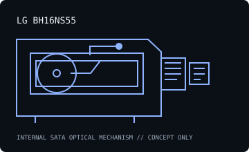

[ INDIVIDUAL COMPONENT // OPTICAL DRIVES ]
LG BH16NS55
SATA internal 16× Blu-ray writer with BD-R dual-layer and M-DISC support as identified in LG product literature. Specifications are model-specific; maximum ratings depend on media, firmware and recording mode.

IDENTIFICATION: LG BH16NS55 · match the full model suffix and OEM label to the cited documentation before assigning capabilities.
Documented specifications
| Catalog subcategory | Blu-ray drives |
|---|---|
| Exact model | LG BH16NS55 |
| Drive type | Internal 16× Super Multi Blue Blu-ray Disc rewriter |
| Supported media and read/write formats | Writes BD-R up to 16× (single layer) / 12× (dual layer), BD-RE up to 2×, DVD±R up to 16×, DVD±R DL up to 8×, DVD±RW up to 8×, DVD-RAM up to 5×, CD-R up to 48× and CD-RW up to 24×. Reads BD-ROM up to 12×, DVD-ROM up to 16× and CD-ROM up to 48×. M-DISC support is listed; BDXL/UHD is not asserted here. |
| Rated maximum speeds | BD-R 16× SL / 12× DL; BD-RE 2×; DVD±R 16×; DVD±R DL 8×; DVD±RW 8×; DVD-RAM 5×; CD-R 48×; BD-ROM read 12×. |
| Interface and mechanical fit | Internal Serial ATA (SATA), 5.25-inch half-height desktop mechanism. Confirm connector, front bezel, mounting screw positions, clearance and supply before installation; do not treat this summary as a dimensional drawing. |
| Host compatibility | Internal 5.25-inch SATA PC drive with SATA data/power and compatible motherboard/controller/OS optical support. Blu-ray playback and authoring need software/codec/protection support. M-DISC requires compatible media and correct recording software; verify model/firmware and exact media logo. |
| Model-specific qualification | Exact BH16NS55 identifier matters; do not substitute BH16NS40, BH16NS50 or BH16NS60 documentation. Maximum speed is media/mode dependent and not a promise of sustained recording. |
Host setup and preservation notes
- Verify the exact drive label, firmware, SATA data/power connection and optical-device enumeration before testing media. Old vendor OS lists describe tested software at release, not a modern support guarantee.
- Read support is not write support. Use media bearing a format the exact drive/firmware supports; distinguish BD-ROM, BD-R and BD-RE, and do not infer BDXL/UHD capability from the Blu-ray logo alone.
- For preservation reads or recordings, log drive model/firmware, host controller, OS/software, media type, checksums and read/verification errors. Keep original discs unmodified and store them in protective cases in a clean, cool, dry location.
Manufacturer, standards and preservation sources
- LG — BH16NS55 product specificationsManufacturer product specification reference for the BH16NS55.
- Icecat — LG BH16NS55 specificationsModel-specific technical data reference; reconcile region/firmware differences with the drive label.
- Blu-ray Disc Association — format specificationsDisc-format reference; it does not certify any individual drive.
- NIST — care and handling of optical discsPreservation and handling guidance; retain verified copies and logs.
Vendor speed ratings are maxima under specified media and modes, not guaranteed sustained rates or a warranty that aged media remains readable.